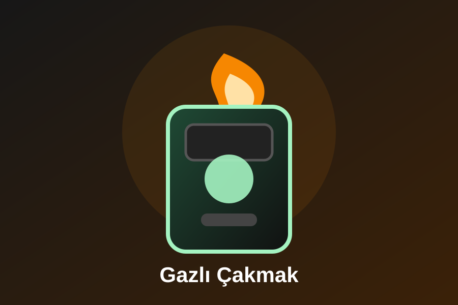
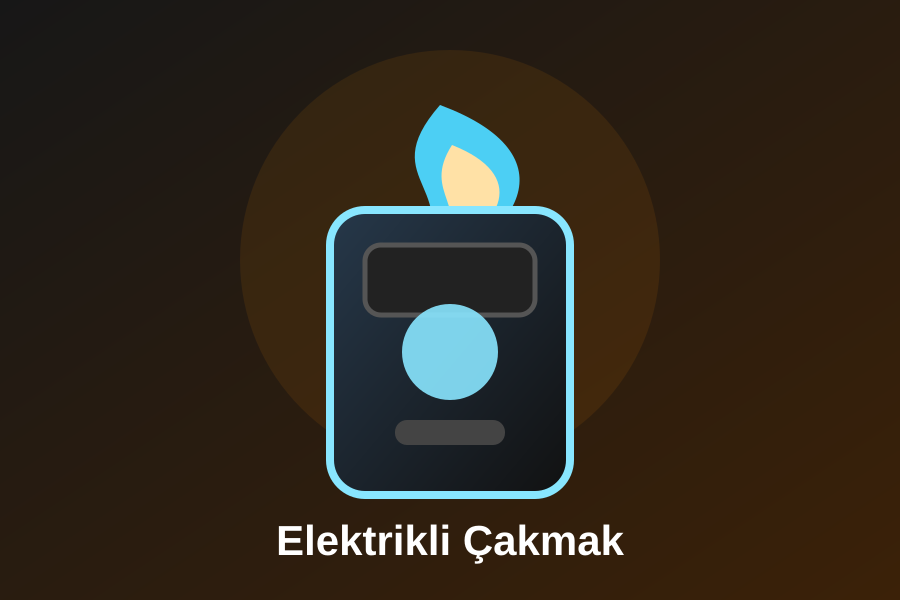
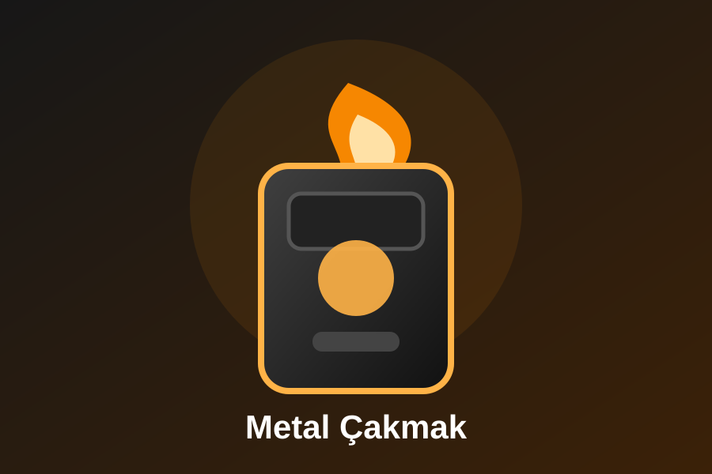
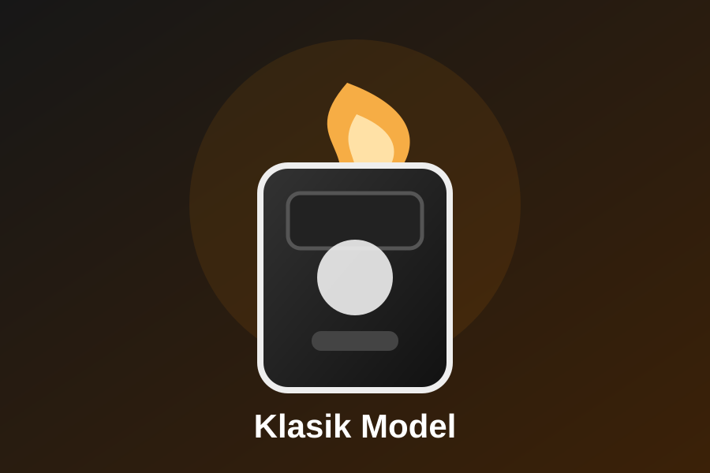

Çakmak Türleri
Çakmaklar yakıtına, mekanizmasına ve kullanım amacına göre farklı türlere ayrılır.

Gazlı Çakmak
Bütan gazı ile çalışan, günlük kullanımda en yaygın modellerdendir.

Elektrikli Çakmak
Şarj edilebilir yapısı sayesinde modern ve pratik bir seçenektir.

Metal Çakmak
Sağlam gövdesiyle uzun ömürlü kullanım ve şık görünüm sağlar.
Torch Çakmak
Yoğun aleviyle rüzgârlı havalarda daha verimli olabilir.
Koleksiyonluk
Özel tasarım ve sınırlı üretim modeller koleksiyon değeri taşır.

Klasik Model
Basit mekanizması ve uygun fiyatıyla yaygın kullanılan modellerdendir.